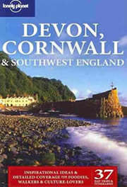

Self Catering Cottages & Flats West of Penzance
Holiday cottages and flats in the Penzance & Penwith are a great choice if you're looking for peace and quiet and the freedom to come and go as you please with no set itineraries or meal times to keep to.
They're great for family holidays and groups as you can usually find places large enough to accommodate everyone. They're a home away from home with plenty of choice whether you're looking for a countryside or coastal retreat.
To the West of Penzance lies Newlyn, Mousehole, Sennen, St. Just, Cape Cornwall, Lands End, Lamorna & Porthcurno.
- Holiday Cottages & Flats east of Penzance
- Holiday Cottages & Flats North of Penzance
- Holiday Cottages in Penzance town centre
- 2 Old Paul Hill (01736 365508)
Newlyn, Penzance
- 32 Duck Street (01923 467871)
32 Duck Street, Mousehole, Penzance
- An Mowhay (01736 810961)
Sunnyside Cottage,
Brane,
Penzance,
TR20 8RD
www.howard-rogerson.co.uk/AnMowhay
- Ancarva (01736 364679)
2 Fradgan Place, Newlyn, Penzance
- Adanac (01736 871348)
Sennen Cove, Penzance
- Bosworlas Farm (01736 788709)
St Just, Penzance
- Borah Farm Cottages (01736 810360)
Lamorna, St Buryan, Penzance
- Chycoll Barn (01736 811036)
Grumbla, Sancreed, Penzance
- Camnythyk (01736 364960)
25 Tredavoe Village, Newlyn, Penzance
- Crow's Nest
Church Street, Newlyn, Penzance
- Churley's Cottage (01736 731363)
Mousehole, Penzance
- Campion ( 01477 544644 or 07890099225 )
Apt 3, Rossiter House, Sennen, Penzance
- Choone Farm (01736 810220)
St Buryan, Penzance
- Carn Towan Cottages (07971 106750)
Sunny Corner Lane, Sennen, Penzance
- Churchgate Cottage (01736 871120)
St Just, Penzance
- Carn Scathe House (01242 674127)
Porthgwarra, Penzance
- Dolphin Cottage (01736 364679)
Newlyn, Penzance
- Flat 9 at Sennen Heights (01162 393732)
Sennen Cove, Penzance
- Fore St Apartments (01736 332713)
Mousehole, Penzance
- Fishermans Cottage (01872 554119)
Newlyn, Penzance
- Harbourside Cottage (01736 710424)
Mousehole, Penzance
- Higher Belmont (01736 361776)
Newlyn, Penzance
- Higher Trye Cottage (01736 794747)
Near Zennor, Penzance
- Hillview Cottage (01736 787353)
Kelynack, St Just, Penzance
- Lebanon Cottage (01736 788747)
Church Street, St Just, Penzance
- Huer's Rock (01822 832985)
Marias Lane, Sennen, Penzance
- Janie's Cottage (01273 495436)
Mousehole, Penzance
- Little Trevallack (01736 871451)
Mayon, Sennen, Penzance
- Lynwood & Jubilee (01736 871206)
Harbour View, Sennen Cove, Penzance
- Land's End Vineries (01736 871437)
Poljigga, nr Porthcurno, Penzance
- Larder Cottages (01736 363687)
Lamorna Valley, Penzance
- Merthyr Farm Cottages (01769 573335)
Morvah, Penzance
- Mole Cottage (01527 832186)
Mousehole
www.mousehole.org.uk
- Molvenny Cottage (01736 810132)
Porthcurno, Penzance
- Mousehole Holiday Cottages (01275 852375)
Mousehole, Penzance
- Mousehole Holiday Cottage (01736 731496)
Mousehole, Penzance
- Mousehole Cottages (01736 731391)
Hoskins Meadow, Mousehole, Penzance
- Nanjulian Farm (01736 871384)
Mellen-Dhu, Marias Lane, Sennen, Penzance
- Oaklands (01736 871459)
Sennen, Penzance
- Old Saltings (01424 892060)
Sennen Cove, Penzance
- Penzance Country Cottage (01736 364199 )
Rosehill Farm, Alverton, Penzance
- Pilots Cottage (01622 831721)
5, Brook Street, Mousehole, Penzance
www.pilotscottagemousehole.co.uk
- Post Office Cottage (01736 731210)
Lamorna, Penzance
- Porthenys (01736 731817)
Vivian Place, Mousehole, Penzance
- Penwithern Cottage (01736 810504)
Treen, Penzance
- Rospannel Farm (01736 810262)
Crows-an-Wra, Penzance
- Riviera Flats (01736 810452)
Sennen Cove, Penzance
- Rose Cottage
Sennen Cove, Penwith, Cornwall
www.rosecottagesennen.com
- Rowes Cottage (01736 793231)
Porthgwarra, Penzance
- Seamore Cottage (01789 297037)
5 Regent Terrace, Mousehole, Penzance
- Stargazey (01736 871284)
8 Zodiac House, Porthcurno, Penzance
- Sunset Cottage (01935 414470)
Pendeen, Penzance
- Scilly Sun Cottages (01736 788458)
The Farmhouse, Bollowal, St Just, Penzance
- Sennen Cove Self Catering (01736 871375)
Sennen Cove, Cornwall
- Sennen Heights (01162 393732)
Sennen Cove, Cornwall
www.sennenheights.co.uk
- Snugglers Den
Cot Valley, St Just, Penzance
www.fromthevalleytothesea.co.uk
emilyhaslam@me.com
- Sea View House (01736 810638 )
The Valley, Porthcurno, Penzance
- Trewellard Manor Farm Cottages (01736 788526)
Trewellard, Penzance
- The Cove Aparthotel (01736 731411)
Lamorna Cove, Lamorna, Penzance
www.thecovecornwall.com
- Treeve Moor Cottage (01736 871284)
Sennen, Penzance
- Tremeth Cottage (01736 731969)
Castallack Farm, Lamorna, Penzance
www.castallackfarm.co.uk
- Trevean Cottage (01736 731969)
Castallack Farm, Lamorna, Penzance
www.castallackfarm.co.uk
- Trevegean Cottages (01736 788858)
St Just, Penzance
- Trewollas (07773 206344)
Sennen Cove, Sennen
www.trewollas.com
- Turnstone Cottage (01736 351879)
Mousehole, Penzance
- The Store (01202 540286)
Church Street, St Just, Penzance
- The Harbour Mews (01736 810504)
Sennen Cove, Penzance
- Tregiffian Vean (01736 871789)
Escalls Cliff, Sennen, Penzance
- Trevear Farm Cottages (01736 871205)
Trevear Farm, Sennen Cove, Penzance
- Trinity Cottages (01736 871867)
Maria's Lane, Sennen Cove, Penzance
- Trewoofe Farmhouse (01736 810336)
Lamorna, Penzance
- Tredinney Farm (01736 810352 )
St Buryan, Penzance
- The School House (01736 810421)
Porthcurno, Penzance
- The Barn (01736 732388 )
Kemyel Wartha, Lamorna, Penzance
- Trebehor Farm Cottages (01736 871263)
Porthcurno, Penzance
- Tides Reach (01736 710424)
Mousehole, Penzance
- The Little Church Cottage (01736 731605)
Paul Churchtown, Paul, Penzance
- Venton Vean (01736 871536)
Sunny Corner Lane, Sennen Cove, Penzance
- Wooton Gray (01491 575297)
1 Low Lee Road, Mousehole, Penzance
Cornwall Travel Guides |
||
 |
 |
 |